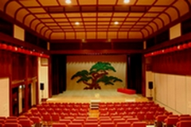
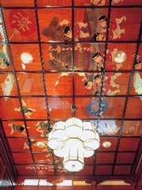
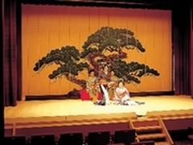
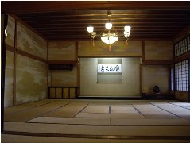
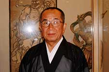
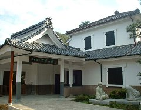
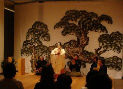
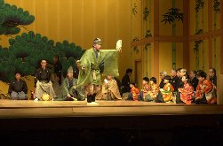

Conference Venue
Pairing 2010 will be held at Yamanaka-za. You can feel a traditional Japanese atmosphere.
|  | Conference hall is classic and traditional Japanese design. You can enjoy Pairing 2010 with an atmosphere different from other conferences. |
| The lobby itself is an exhibition of essence of Yamanaka Lacquerwares – from the columns of zelkova trees that were all polished with lacquers, to the coffered ceiling covered with makie decorations. |  |
|  | After a relaxing bath, you can then enjoy "Yamanaka-bushi/Dance of Four Seasons" performed by Geikos. The songs and dances performed at this wonderful stage of Japanese Cypress are the same as the traditional Japanese parties. |
Lunch & Banquet
Lunches will be served at Mugen-an and Basho-no-Yakata Museum.
|  | Mugen-an is a precious example of modern "Shoinzukuri"style that was inherited from the tradition of study rooms in Samurai family houses. Numerous antique art pieces are also exhibited here. |
| After lunch at Mugen-an, the curator of Mugen-an will talk to you about Japanese poetry -Haiku-. He was a Buddhist priest, and you can see him wearing a Buddhist priest's stole. After his talk, you can write Haiku poems actually. |  |
|  | Basho-no-Yakata Museum has characteristics of an old inn in the middle of Meiji Era. You can enjoy viewing the beautiful garden inside. Information on Poet Matsuo Basho and exhibitions of Yamanaka Lacquerware will be also on display. You can enjoy tea ceremony after lunch at Basho-no-Yakata Museum. |
A traditional Japanese cuisine together with locally-brewed sake will be served at the evening banquet.
Special Attractions in banquet: "Yamanaka-bushi"
In the second evening dinner, you can enjoy eating and drinking Japanese food, watching "Yamanaka-bushi" at Kajikaso Royal Hotel. Today Yamanaka-bushi is known as one of the folk songs in hot-spring areas. A long time ago, it was a local folk song popular in the adjacent rural area of Yamanaka Hot Spring. Somewhere down the line, the folk song was often sung in banquets. Yamanaka-bushi is beautiful slow-tempo song and you can feel relax in a hot-spring atmosphere.
Special Attractions in banquet: "Noh" and "Kyogen"
You can enjoy eating and drinking Japanese food, watching "Noh" and "Kyogen" at Yamanaka-za by Kinjoh-Nohgakukai. Noh and Kyogen are one category of "Nogaku", which is one of the traditional Japanese theatrical arts. The Japanese Government designated Nogaku as an Important Intangible Cultural Property in 1957. Nogaku was designated by UNESCO as World Intangible Cultural Heritage in 2001.
|  | Noh is a major form of classical Japanese musical drama that has been performed since the 14th century. Many characters are masked, with men playing male and female roles. The repertoire is normally limited to a specific set of historical plays. |
| Kyogen is a form of traditional Japanese theater. It developed alongside noh, was performed along with noh as an intermission of sorts between noh acts, and retains close links to noh in the modern day; therefore, it is sometimes designated noh-kyogen. However, its content is not at all similar to the formal, symbolic, and solemn noh theater; kyogen is a comical form, and its primary goal is to make its audience laugh. |  |
Program 1: Noh
Title: HAGOROMO (= THE ROBE OF FEATHERS)
Story:
In a spring morning, a fisherman called "Hakuryu"
(= White Dragon) found a beautiful robe hanging from the branch
of a pine tree. He tried to bring home the robe as family
treasure. Then a goddess appeared before him, and asked him to return
it. He did not listen to her at first. She was so sad, and explained
that she was unable to ascend again to Heaven without the robe. He
was so moved by her distress that he agreed to return it if she would
dance for him.
The goddess wearing the robe danced presenting
the Moon Place, and maintained a lot of dance. At last she soared to
the faraway Mt. Fuji, and disappeared up to Heaven among the mists
and clouds.
This story is one of the most popular works of
Noh. This is very crisp and beautiful story because the goddess
dances turning her robe in a spring scene.
Program 2: Kyogen
Title: BUSU (= POISON)
Story:
The comical characters Taro-kaja and Jiro-kaja
stayed at home in their master's absence. Before their master left,
he said "There is a poison known as busu in the tab. Don't get too
close to that." In his absence, they had a great interest in the
busu. At last, Taro-kaja looked the content of the tub. It looked
delicious!! Taro-kaja ate it, and noticed that it was Japanese
liquid candy. They noticed that their master told a lie! They
consumed the liquid candy with zeal.
Next, they made up a
story to explain. They then deliberately broke a household treasure
belonging to their master. When he returned, they cried and
explained that they ate the busu intending to die in order to
expiate what they have done, but they could not die and felt so
sad. Their master had a lost face.
Tourism
Yamanaka Onsen, located in Kaga City of Ishikawa Prefecture, is an onsen (hot spring) with a special atmosphere. There are various sight-seeing spots including the conference venue Yamanaka-za where you can fully enjoy a traditional performance art; you can also take a relaxing stroll along the river. The Onsen District is a compact district where you can tour around in just about an hour. With a history of 1300 years, you can enjoy the high quality hot springs, its culture, and magnificent natural sceneries here at Yamanaka Onsen.
Moreover, Yamanaka-Onsen is close to Kyoto. It takes about two hours by JR Special Express 'Thunderbird' or 'Raicho'. Kyoto is on the way from Yamanaka-onsen to Kansai Int'l Airport.
More information on Yamanaka-onsen is available at:


{kind=link}